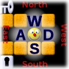
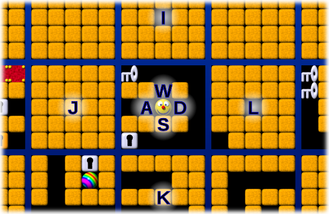
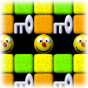

Yet another 4D Maze game
This is a four-dimensional maze game you can play in your web browser.
Understand it
In a two-dimensional tile-based game, you have four directions to go: north, west, south and east. We use the W, A, S and D keys for these.
If the game has a third dimension, e. g. because it takes place in a building with several floors where every tile has staircases up and down, we would display each floor as its own grid, and stack the grids on top of each other. We use the I and K keys to go up and down.
In this mode of display, the vertical screen dimension now corresponds to two game dimensions: north/south and up/down. If you go north, you go up on the screen by the height of one tile, and if you go up to the next floor, you go up on the screen by the height of one floor grid. We display north as "minor up", so to speak, and up as "major up".
This game has four dimensions, so we need to display two additional directions in which you can move, let's call them ana and kata . Just as above you there's a parallel floor, with one particular tile right above your head and accessible via a staircase, there is a complete three-dimensional parallel building ana of this one, with one tile right next to you in the ana direction, accessible via some magic portal. And just like there is a floor below you, there is a parallel building kata of you.
To display the fourth dimension, we use the same trick that allowed us to show both north/south and up/down as the vertical screen dimension: We put the ana parallel building on the left and the kata one on the right, so that the horizontal screen dimension now corresponds both to east/west and to ana/kata. "Minor left" is west, and "major left" is ana. You can move ana with J and kata with L.
There's no gravity in this maze, so you don't need staircases. In fact, we treat all four dimensions completely equally: Going up isn't more difficult than going west. And since ana is just another direction, we don't need a magic portal to go there - after all, you also don't need a magic portal to go north! The tile you are standing on simply has eight directly adjacent tiles (not diagonally!) and you can move in any of the eight directions unless an obstacle is blocking your path.
That's almost all you need to know about the geometry of the maze: The game is tile-based, takes place in a four-dimensional hyper-rectangularly shaped grid and allows you to move in eight directions between adjacent tiles. But one more thing: The maze wraps around! That is, if you leave it on one side, you enter it from the other side, just like in Pac-Man. You won't notice when you wrap around that way, though, as you are always displayed in the middle of the screen and the maze scrolls around you. If the maze is only three tiles wide in the north/south direction, you might see the same key twice: one tile to the north of yourself, and two tiles south of yourself. And if it is only two tiles wide in the east/west direction, you will see the square you are standing on, right beyond the one next to you!
Play it
Select a level - the provided ones should be roughly in order of difficulty, but feel free to inspect the text files, create your own levels and send them to me!
You now see the hypercube of 5 * 5 * 5 * 5 tiles around your position: In each of the eight directions, you can see two tiles ahead. You can move around using these keys:
| W | move minor-up |
| A | move minor-left |
| S | move minor-down |
| D | move minor-right |
| I | move major-up |
| J | move major-left |
| K | move major-down |
| L | move major-right |
| space | shuffle dimensions (i. e. rotate randomly for added confusion) |
Your goal is to reach the goal: . On your way, you will find a few special items:
- A silver key allows you to remove one silver lock .
- A golden key allows you to remove one golden lock .
- There are boulders that can be pushed around,
- and boulder-shaped holes that can only be removed by pushing a boulder into them.
- Switches toggle whether the red or the green tiles can be passed.